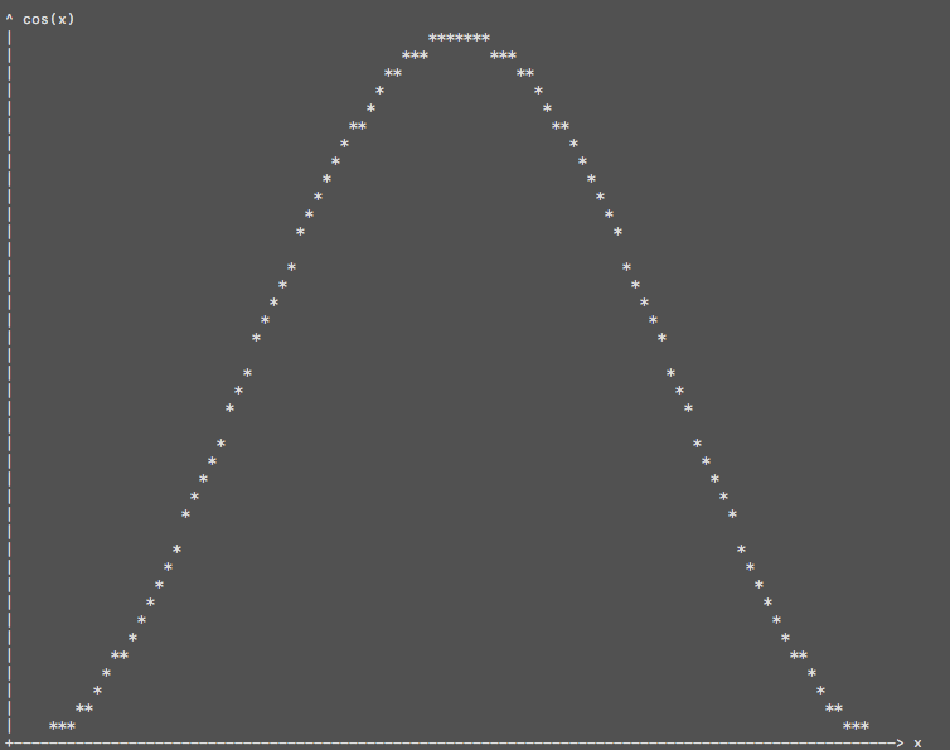
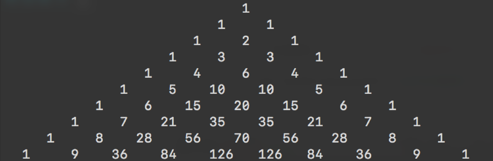
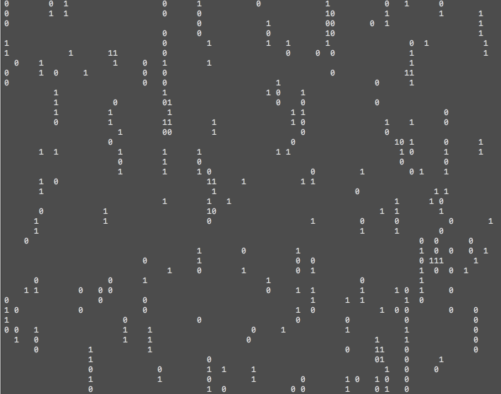

编写函数wordcount(text)实现对于输入字符串的词数统计。
要求：输入字符串text，以所有非英文字母（除去'和-）为单词的分隔符制作分割后的单词列表并统计单词个数。
编写函数flatlist(list_)将嵌套列表中所有的元素置入一个列表中。
如：将[1,3,[3,[4,5,[6],[[],{1:2}],3],(0,1),2]]拉直成为[1,3,3,4,5,6,{1:2},3,(0,1),2]。
要求：尝试分别使用列表方法与字符串方法实现这一点。进一步尝试拉直所有迭代对象。
编写函数caesar(str_)实现平移$k$位的凯撒密码加密（即将每个字母按照字母表替换为$k$个位置之后的字母），保持字母大小写不变，非英文字母不改变。
如：It is coming!将变为Lw lv frplqj!。
编写函数plot(f[, width, height, xlim, ylim, xlabel, ylabel])用*实现函数$f$图线的绘制，要求绘制出来的图片占有$height\times width$个字符空间，绘制定义域、值域范围xlim, ylim可以由用户输入。、
例如：cos(x)在[-1, 1]间的图像如下图所示。

编写函数kmax(array[, k])寻找输入序列中第$k$大的数，尝试不使用排序以$O(n)$的算法复杂度完成这项任务。
提示：可以尝试类似于快速排序大小分开的方式二分处理。
编写一个有理数类rational（对象），实现以下功能：
分布保存整型数分子与分母
始终保持分数为既约分数
使用函数或字符串显示函数重载格式化显示分数
实现加、减、乘、除（可以使用运算符重载）
构造函数能够做到对格式化字符串和数值的强制类型转换
提示：
以下函数GCD使用欧拉算法返回两个输入整数的最大公约数。
def GCD(a, b): while b > 0: c = b b = a % b a = c return a
以下函数isint判断输入数据是否足够接近于整数。
isint = lambda x: abs(x - round(x)) < 1e-4
借用递归返回距离x足够近的分数的分子与分母元组对，参数maxiter确定了精度。
@staticmethod def nearest(num, maxiter=100): def iter(x, d): if isint(x) or d >= maxiter: return int(round(x)), 1 niter = iter(1 / (x - int(x)), d+1) return int(x) * niter[0] + niter[1], niter[0] if num >= 0: return iter(num, 0) num = iter(-num, 0) return -num[0], num[1]
文件rational_template.py已经完成了大部分内容，请修改替换七处raise函数。
编写函数prime(N)返回一个序列，包含$N$以内所有素数。尝试将计算复杂度降为$\displaystyle O(\frac{n\sqrt n}{\log n})$，即对于每个数仅验证小于其算术平方根的素数是否是其因子。
编写函数frac(x)返回一个序列，包含$x$的素因数分解（$x<10000$）。
要求：返回的序列每个元素都是二元元组，分别表示素数和当前素数的幂次，幂次要求为正整数。
请利用以下代码输出结果。
def symbolize(num, symbols): # not implemented def printresult(x): factors = frac(x) sup = lambda x: symbolize(x, "⁰¹²³⁴⁵⁶⁷⁸⁹") print(x, '=', '⋅'.join([str(p[0]) + (sup(p[1]) if p[1] > 1 else '') for p in factors])) if __name__ == "__main__": printresult(169400)
其中函数symbolize函数将x的每一位替换为字符串中的对应元素，如将12转换为¹²，请尝试以尽量简便的方式实现这个函数。
最终输出结果应该是：169400 = 2³⋅5²⋅7⋅11²
编写函数C(n, k)与P(n, k)实现组合数与排列数的计算。利用$C_n^k = C_{n-1}^{k-1}+C_{n-1}^k$减小数据大小防止溢出，并尝试通过离线打表加快运行速度（即现做出$n<N$时的所有组合数然后通过查表实现组合数运算）。
可以通过下列语句输出计算好的组合数表格CTable。
if __name__ == "__main__": N = 10 for n in range(N): print(' ' * (3*(N-n-1)) + ' '.join(['{:^5d}'.format(x) for x in Ctable[n]]))

编写函数fpower(x, k)实现快速幂：
$$
x^k = x^{\sum_{i=0}^\infty a_i\cdot2^i} = \prod_{i=0}^\infty (x^{2^i})^{a_i}
$$
其中$a_i$取值为$0$或$1$，是正整数$k$的二进制展开后的数位。注意$x^{2^i} = \big(x^{2^{i-1}}\big)^2$，因此通过循环求幂复杂度达到$O(k)$，而快速幂的运算量只有$O(\log k)$。
编写函数findpath(map)寻找在二维迷宫地图map中从入口走到出口的最短路径。
其中map由-2, -1, 0和1构成，1表示迷宫的墙壁，无法通行，-1表示迷宫入口，-2表示出口，0表示空地，可以随意走动。输入确保入口和出口有且仅有一个。输出由一个坐标序列构成，表示最短的路径（包含出入口）。提示：使用广度优先搜索算法实现这项任务。
可以使用以下函数输出地图，输出时使用2表示路径。
def printpathonmap(path, map, symbol_start='@', symbol_end='#', symbol_path='⋅', symbol_wall='▒'): for p in path: if map[p[0]][p[1]] == 0: map[p[0]][p[1]] = 2 symbol = {-1: symbol_start, -2: symbol_end, 0: ' ', 1: symbol_wall, 2:symbol_path} print(' '.join([symbol_wall] * (len(map[0]) + 2))) print('\n'.join([' '.join([symbol_wall] + [symbol[x] for x in row] + [symbol_wall]) for row in map])) print(' '.join([symbol_wall] * (len(map[0]) + 2)))
在上题的基础上，编写函数newmaze()随机生成一个有解的迷宫。
编写程序random01.py实现随机落下的0,1序列。
要求：大致做成以下效果，确保各个数位的下落速度有一定区别，并且随机生成的0和1以较大的概率落在同一列。

提示：一种周期性运行到代码如下：
def ontimer(): ...# 代码片段 global timer timer = threading.Timer(0.1, ontimer) # 每0.1s执行一次ontimer timer.start() ontimer()
可以用以下代码实现清屏。
import os os.system('clear')
周期运行也可以借用tool.py中实现的包装器@periodic，包装器的使用在random01_template.py中已经实现。
实现evaluate(expr, **vars)函数计算表达式expr的值，对于表达式中的变量使用vars找到对应的值。
部分代码已经在evaluate_template.py中实现。
operators由优先级由低到高的运算组成，每个运算由一个三元元组构成：表达式、运算方向和运算规则。表达式中以.表示参与运算的变量，至多有两个。运算规则则是一个有着变量个数个参数的函数。运算方向在只有一个变量上取值为零，在有两个变量时从左向右计算取值+1，反正则是-1。
其中恒等运算'.'提供的规则将无法通过其余运算解析的字符串通过查找vars中的对应值计算。
digits包含了所有阿拉伯数码。
要求实现calculate函数计算表达式expr的值，其中depth列表记录了当前位置前有几个尚未配对的左括号。你可以删除参数depth以及关于变量个数的判断。
期望的结果如下：
Expression: x^2 + 2 **3 *3 + x ** 3 - 4 x = 3 x^2 + 2 **3 *3 + x ** 3 - 4 = 56 Expression: x+y+z+pi x = 0 y = 2 z = 3 x+y+z+pi = 8.141592653589793 Expression: e^2 - 3*237 e^2 - 3*237 = -703.6109439010694 Expression:
markdown文件pdf文件